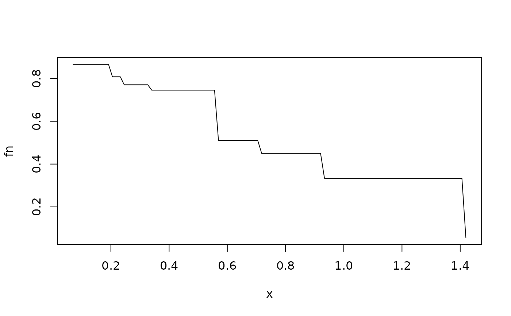

Estimate a survival function under current status sampling
Usage
currstatCIR(
time,
event,
X,
SL_control = list(SL.library = c("SL.mean", "SL.glm"), V = 3),
HAL_control = list(n_bins = c(5), grid_type = c("equal_mass"), V = 3),
deriv_method = "m-spline",
sample_split = FALSE,
m = 5,
eval_region,
n_eval_pts = 101,
alpha = 0.05,
sensitivity_analysis = FALSE,
copula_control = list(taus = c(-0.1, -0.05, 0.05, 0.1))
)Arguments
- time
n x 1numeric vector of observed monitoring times. For individuals that were never monitored, this can be set to any arbitrary value, includingNA, as long as the correspondingeventvariable isNA.- event
n x 1numeric vector of status indicators of whether an event was observed prior to the monitoring time. This value must beNAfor individuals that were never monitored.- X
n x pdataframe of observed covariate values.- SL_control
List of
SuperLearnercontrol parameters. This should be a named list; seeSuperLearnerdocumentation for further information.- HAL_control
List of
haldensifycontrol parameters. This should be a named list; seehaldensifydocumentation for further information.- deriv_method
Method for computing derivative. Options are
"m-spline"(the default, fit a smoothing spline to the estimated function and differentiate the smooth approximation),"linear"(linearly interpolate the estimated function and use the slope of that line), and"line"(use the slope of the line connecting the endpoints of the estimated function).- sample_split
Logical indicating whether to perform inference using sample splitting
- m
Number of sample-splitting folds, defaults to 5.
- eval_region
Region over which to estimate the survival function.
- n_eval_pts
Number of points in grid on which to evaluate survival function. The points will be evenly spaced, on the quantile scale, between the endpoints of
eval_region.- alpha
The level at which to compute confidence intervals and hypothesis tests. Defaults to 0.05
- sensitivity_analysis
Logical, whether to perform a copula-based sensitivity analysis. Defaults to
FALSE- copula_control
A named list of control parameters for the copula-based sensitivity analysis. This should be a named list.
Value
List of data frames giving results. If not performing a sensitivity analysis, a single data frame is returned; if performing a sensitivity analysis, a separate data frame will be returned for each value of the copula association parameter. The results data frames have columns:
- t
Time at which survival function is estimated
- S_hat_est
Survival function estimate
- S_hat_cil
Lower bound of confidence interval
- S_hat_ciu
Upper bound of confidence interval
References
Wolock C.J., et al. (2025). "Investigating symptom duration using current status data: a case study of post-acute COVID-19 syndrome."
Examples
if (FALSE) # This is a small simulation example
set.seed(123)
n <- 300
x <- cbind(2*rbinom(n, size = 1, prob = 0.5)-1,
2*rbinom(n, size = 1, prob = 0.5)-1)
t <- rweibull(n,
shape = 0.75,
scale = exp(0.4*x[,1] - 0.2*x[,2]))
y <- rweibull(n,
shape = 0.75,
scale = exp(0.4*x[,1] - 0.2*x[,2]))
# round y to nearest quantile of y, just so there aren't so many unique values
quants <- quantile(y, probs = seq(0, 1, by = 0.05), type = 1)
for (i in 1:length(y)){
y[i] <- quants[which.min(abs(y[i] - quants))]
}
delta <- as.numeric(t <= y)
dat <- data.frame(y = y, delta = delta, x1 = x[,1], x2 = x[,2])
dat$delta[dat$y > 1.8] <- NA
dat$y[dat$y > 1.8] <- NA
eval_region <- c(0.05, 1.5)
res <- survML::currstatCIR(time = dat$y,
event = dat$delta,
X = dat[,3:4],
SL_control = list(SL.library = c("SL.mean", "SL.glm"),
V = 3),
HAL_control = list(n_bins = c(5),
grid_type = c("equal_mass"),
V = 3),
sensitivity_analysis = FALSE,
eval_region = eval_region)$primary_results
#> Warning: Some fit_control arguments are neither default nor glmnet/cv.glmnet arguments: n_folds;
#> They will be removed from fit_control
#> 20% of observations outside training support...predictions trimmed.
xvals = res$t
yvals = res$S_hat_est
fn=stepfun(xvals, c(yvals[1], yvals))
plot.function(fn, from=min(xvals), to=max(xvals)) # \dontrun{}
